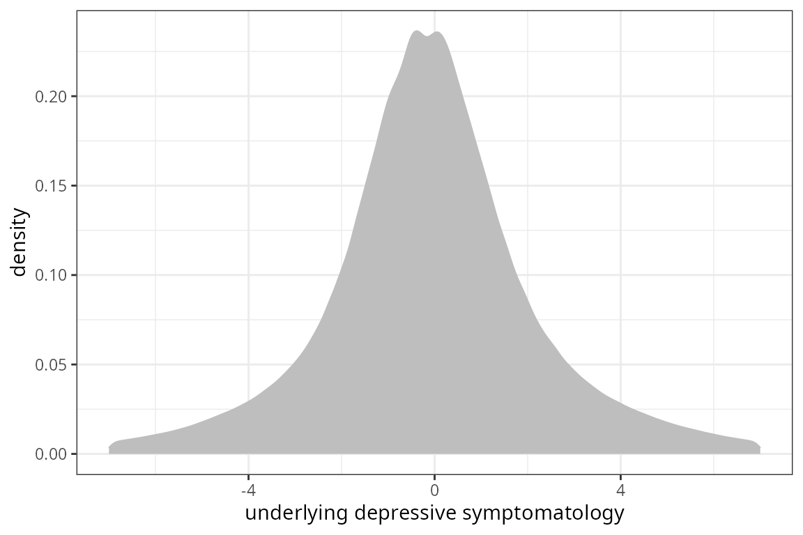
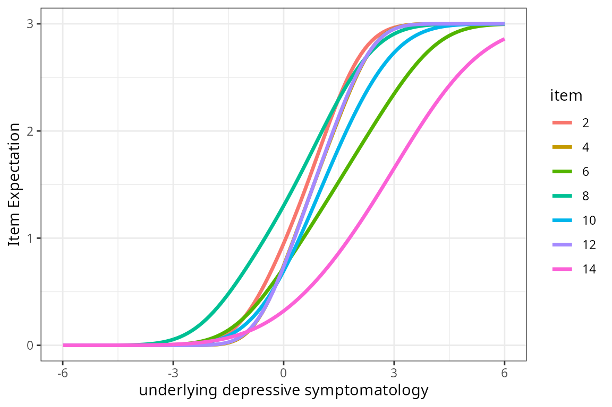
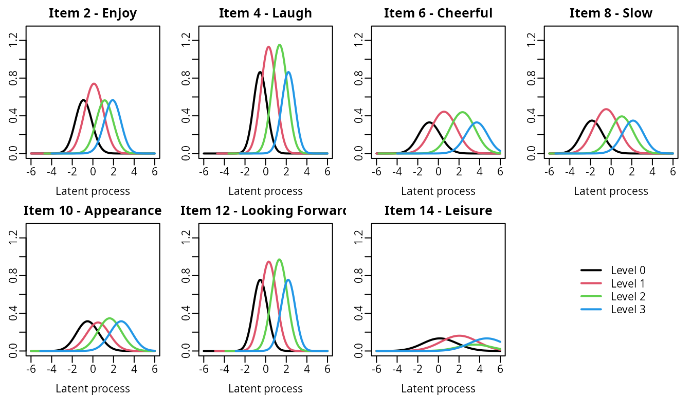
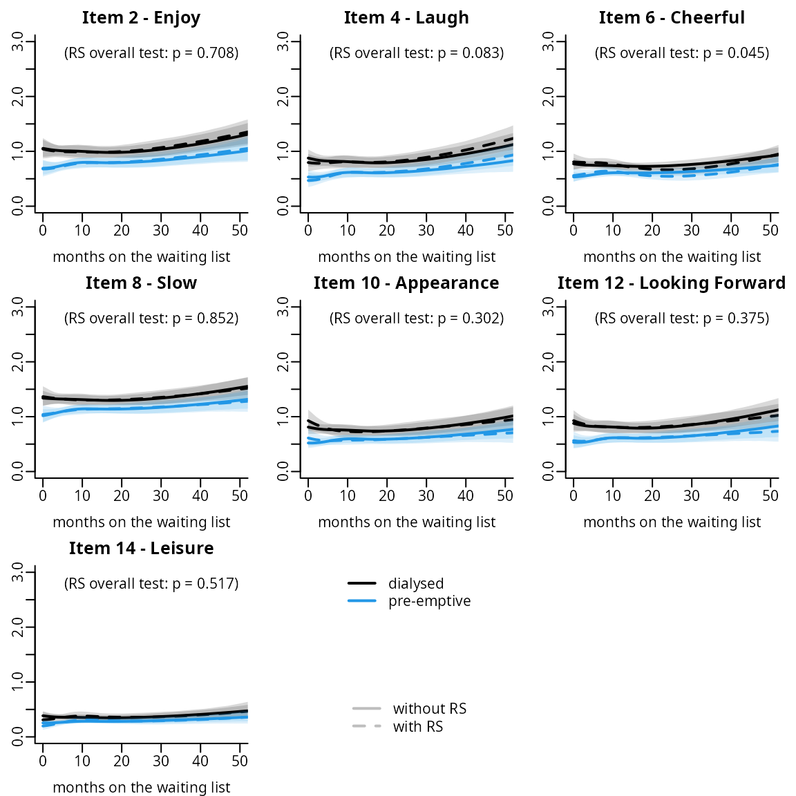

Continuous-time longitudinal IRT model
Source:vignettes/latent_process_model_with_multlcmm_IRT.Rmd
latent_process_model_with_multlcmm_IRT.RmdThis vignette illustrates how to estimate a longitudinal IRT following the methodology described in Proust-Lima et al. (2022 - https://doi.org/10.1016/j.ymeth.2022.01.005). The model combines a graded response measurement model to link a series of binary or ordinal items measured repeatedly over time with their underlying latent process. Simultaneously, a linear mixed model describes the trajectory of the underlying latent process over time.
Importation
The longitudinal IRT model is estimated via multlcmm function of lcmm R package (Proust-Lima et al. 2017). The following libraries are used in this vignette:
Dataset
The illustration is on a simulated dataset that mimics the PREDIALA study described and analyzed in Proust-Lima et al. (2021). The dataset is called simdataIRT. It contains the following information:
- grp: group with 0=dialyzed and 1=preemptive
- sex: sex with 0=woman and 1=man
- age: age at entry in the cohort
- hads_2 … hads_14 : 7 items of HADS measuring depression
- ID: identification number of the patient
- time: time of measurement (months since entry on the waiting list)
- time_entry: time on the waiting list at entry in the cohort (in months)
str(simdataHADS)
#> 'data.frame': 1140 obs. of 13 variables:
#> $ grp : int 1 0 0 0 0 0 1 0 0 0 ...
#> $ sex : int 1 0 0 0 0 0 1 1 1 1 ...
#> $ age : num 59.5 58.2 58.2 58.2 58.2 ...
#> $ hads_2 : int 0 3 1 1 1 2 2 3 3 2 ...
#> $ hads_4 : int 0 0 0 1 0 1 3 2 2 2 ...
#> $ hads_6 : int 0 0 1 1 0 1 1 1 2 2 ...
#> $ hads_8 : int 1 0 1 0 1 1 1 2 1 2 ...
#> $ hads_10 : int 0 0 2 0 0 1 1 3 1 2 ...
#> $ hads_12 : int 0 0 0 0 0 1 2 3 3 2 ...
#> $ hads_14 : int 0 0 0 0 0 0 0 0 0 1 ...
#> $ ID : int 1 2 2 2 2 2 3 4 4 4 ...
#> $ time : num 7.74 3.18 8.95 15.08 19.74 ...
#> $ time_entry: num 7.74 3.18 3.18 3.18 3.18 ...Description of the sample
demo <- simdataHADS %>% group_by(ID) %>% arrange(time) %>%
filter(row_number()==1)
summary(demo)
#> grp sex age hads_2
#> Min. :0.0000 Min. :0.0000 Min. :55.92 Min. :0.0000
#> 1st Qu.:0.0000 1st Qu.:0.0000 1st Qu.:58.28 1st Qu.:0.0000
#> Median :1.0000 Median :1.0000 Median :59.00 Median :1.0000
#> Mean :0.5722 Mean :0.5954 Mean :58.99 Mean :0.8806
#> 3rd Qu.:1.0000 3rd Qu.:1.0000 3rd Qu.:59.62 3rd Qu.:1.0000
#> Max. :1.0000 Max. :1.0000 Max. :61.96 Max. :3.0000
#> hads_4 hads_6 hads_8 hads_10
#> Min. :0.0000 Min. :0.0000 Min. :0.000 Min. :0.0000
#> 1st Qu.:0.0000 1st Qu.:0.0000 1st Qu.:1.000 1st Qu.:0.0000
#> Median :0.0000 Median :1.0000 Median :1.000 Median :0.0000
#> Mean :0.6613 Mean :0.6827 Mean :1.219 Mean :0.6292
#> 3rd Qu.:1.0000 3rd Qu.:1.0000 3rd Qu.:2.000 3rd Qu.:1.0000
#> Max. :3.0000 Max. :3.0000 Max. :3.000 Max. :3.0000
#> hads_12 hads_14 ID time
#> Min. :0.0000 Min. :0.0000 Min. : 1 Min. : 0.06557
#> 1st Qu.:0.0000 1st Qu.:0.0000 1st Qu.:141 1st Qu.: 2.65574
#> Median :0.0000 Median :0.0000 Median :281 Median : 5.14754
#> Mean :0.6898 Mean :0.3012 Mean :281 Mean : 8.24991
#> 3rd Qu.:1.0000 3rd Qu.:0.0000 3rd Qu.:421 3rd Qu.:11.04918
#> Max. :3.0000 Max. :3.0000 Max. :561 Max. :43.14754
#> time_entry
#> Min. : 0.06557
#> 1st Qu.: 2.65574
#> Median : 5.14754
#> Mean : 8.24991
#> 3rd Qu.:11.04918
#> Max. :43.14754Timescale of interest: time on the waiting list
The timescale of interest is the time in months spent on the waiting list: time. This timescale poses two problems:
As in many studies, entry in the study occurs for each individual at different timings in the progression of the disease. this is called delayed entry. It differs from the usual time in the study where entry corresponds to time 0. Here entry (variable time_entry) corresponds to the duration on the waiting list at inclusion, and time 0 is unlikely observed (i.e., entry in the cohort does not occur as the same time as entry on waiting list).
The timescale is continuous per se, with as many values as the number of total observations. This prevents the use of methods considering discrete timescales with measurements at the same times for all the individuals, such as classical longitudinal latent variable models.
Distribution of the time at entry and time at follow_ups
tempSim <- simdataHADS %>% group_by(ID) %>% arrange(time) %>% mutate(Visit=ifelse(time==time_entry,"Entry","Follow-up"))
p <- ggplot(tempSim, aes(x=time,fill=Visit,color=Visit)) + geom_histogram(binwidth=1,aes(y=..density..)) +
labs(x="Months on the waiting list")
p + scale_color_grey(start = 0.1,
end = 0.5)+scale_fill_grey(start = 0.1,
end = 0.5) +
theme_classic()
Warning:
[1m
[22mThe dot-dot notation (`..density..`) was deprecated in ggplot2 3.4.0.
[36mℹ
[39m Please use `after_stat(density)` instead.
[90mThis warning is displayed once every 8 hours.
[39m
[90mCall `lifecycle::last_lifecycle_warnings()` to see where this warning was
[39m
[90mgenerated.
[39mQuantiles of the distribution of measurement times
quantile(simdataHADS$time,probs=(0:10)/10)
#> 0% 10% 20% 30% 40% 50%
#> 0.06557377 2.29508190 3.90163950 6.64590183 8.84590190 11.57377100
#> 60% 70% 80% 90% 100%
#> 14.30163940 18.33770480 23.52131100 33.91803170 84.95082100Continuous-time longitudinal IRT model estimation
We consider here a longitudinal IRT model with natural cubic splines on time on the waiting list to account for a possible nonlinear trajectory over time, and we adjust the trajectory for the group. We consider 2 internal knots placed at 7 and 15, and shift the right boundary at 60 due to the long tail of the distribution. In the main analysis, we estimate a model with no differential item functioning (DIF) on the group and no response shift (RS) on time.
Estimation of the model with no DIF/RS
To reduce the computation time, we first estimate a model with only 1 random-effect, a random intercept. And then, we use the estimates as initial values for the estimation of the model that also includes random-effects on the time functions. Estimation involves a numerical integration approximated by quasi Monte-Carlo (QMC) with 1000 points. This induces very intensive and long computations but was shown to give accurate results in simulations.
modIRT_i <- multlcmm(hads_2 + hads_4 +hads_6 + hads_8 +hads_10+hads_12 + hads_14 ~ ns(time,knots=c(7,15),Boundary.knots = c(0,60))*grp,random=~1,data=simdataHADS,subject="ID",link="thresholds",methInteg="QMC",nMC=1000)
# use the estimates as initial values - the vector c(0,1,0,0,1,0,0,0,1) initializes the cholesky matrix of the random-effects
Binit <- c(modIRT_i$best[1:7],c(0,1,0,0,1,0,0,0,1),modIRT_i$best[8:length(modIRT_i$best)])
modIRT <- multlcmm(hads_2 + hads_4 +hads_6 + hads_8 +hads_10+hads_12 + hads_14 ~ ns(time,knots=c(7,15),Boundary.knots = c(0,60))*grp,random=~1+ns(time,knots=c(7,15),Boundary.knots = c(0,60)),data=simdataHADS,subject="ID",link="thresholds",methInteg="QMC",nMC=1000, B=Binit)The summary of the estimation:
summary(modIRT)
#> General latent class mixed model
#> fitted by maximum likelihood method
#>
#> multlcmm(fixed = hads_2 + hads_4 + hads_6 + hads_8 + hads_10 +
#> hads_12 + hads_14 ~ ns(time, knots = c(7, 15), Boundary.knots = c(0,
#> 60)) * grp, random = ~1 + ns(time, knots = c(7, 15), Boundary.knots = c(0,
#> 60)), subject = "ID", link = "thresholds", data = simdataHADS,
#> methInteg = "QMC", nMC = 1000, nproc = 20)
#>
#> Statistical Model:
#> Dataset: simdataHADS
#> Number of subjects: 561
#> Number of observations: 7980
#> Number of latent classes: 1
#> Number of parameters: 44
#> Link functions: Thresholds for hads_2
#> Thresholds for hads_4
#> Thresholds for hads_6
#> Thresholds for hads_8
#> Thresholds for hads_10
#> Thresholds for hads_12
#> Thresholds for hads_14
#>
#> Iteration process:
#> Convergence criteria satisfied
#> Number of iterations: 23
#> Convergence criteria: parameters= 1.5e-07
#> : likelihood= 2.9e-05
#> : second derivatives= 6e-06
#>
#> Goodness-of-fit statistics:
#> maximum log-likelihood: -7218.07
#> AIC: 14524.13
#> BIC: 14714.64
#>
#> Maximum Likelihood Estimates:
#>
#> Fixed effects in the longitudinal model:
#>
#> coef Se Wald p-value
#> intercept (not estimated) 0.00000
#> ns(...)1 -0.12557 0.13637 -0.921 0.35718
#> ns(...)2 0.21602 0.22892 0.944 0.34534
#> ns(...)3 0.52819 0.17406 3.034 0.00241
#> grp -0.56649 0.15226 -3.721 0.00020
#> ns(...)1:grp 0.21044 0.20316 1.036 0.30027
#> ns(...)2:grp 0.46316 0.33009 1.403 0.16058
#> ns(...)3:grp -0.00636 0.24646 -0.026 0.97942
#>
#>
#> Variance-covariance matrix of the random-effects:
#> (the variance of the first random effect is not estimated)
#> intercept ns(...)1 ns(...)2 ns(...)3
#> intercept 1.00000
#> ns(...)1 -0.46121 0.84470
#> ns(...)2 -1.14421 1.12605 2.66212
#> ns(...)3 -0.26878 0.58923 0.66262 0.46238
#>
#> hads_2 hads_4 hads_6 hads_8 hads_10 hads_12
#> Residual standard error: 0.79159 0.64076 1.03750 1.00833 1.06157 0.68536
#> hads_14
#> Residual standard error: 1.63011
#>
#> Parameters of the link functions:
#>
#> coef Se Wald p-value
#> hads_2-Thresh1 -0.53483 0.11863 -4.508 0.00001
#> hads_2-Thresh2 1.13007 0.05254 21.509 0.00000
#> hads_2-Thresh3 0.89283 0.04974 17.949 0.00000
#> hads_4-Thresh1 -0.22854 0.10998 -2.078 0.03770
#> hads_4-Thresh2 1.01804 0.04766 21.361 0.00000
#> hads_4-Thresh3 1.04826 0.05791 18.102 0.00000
#> hads_6-Thresh1 -0.37848 0.11770 -3.216 0.00130
#> hads_6-Thresh2 1.35627 0.06718 20.188 0.00000
#> hads_6-Thresh3 1.32585 0.09338 14.198 0.00000
#> hads_8-Thresh1 -1.37992 0.16595 -8.315 0.00000
#> hads_8-Thresh2 1.34364 0.06319 21.262 0.00000
#> hads_8-Thresh3 1.10211 0.05741 19.196 0.00000
#> hads_10-Thresh1 -0.01232 0.11044 -0.112 0.91115
#> hads_10-Thresh2 1.00872 0.05355 18.839 0.00000
#> hads_10-Thresh3 1.10947 0.06459 17.176 0.00000
#> hads_12-Thresh1 -0.19444 0.11018 -1.765 0.07760
#> hads_12-Thresh2 0.99923 0.04764 20.973 0.00000
#> hads_12-Thresh3 1.02758 0.05720 17.966 0.00000
#> hads_14-Thresh1 0.92540 0.17048 5.428 0.00000
#> hads_14-Thresh2 1.49075 0.09725 15.330 0.00000
#> hads_14-Thresh3 0.87089 0.10087 8.634 0.00000Predicted underlying depressive symptomatolgy trajectory
plot of predicted mean trajectories
The predicted trajectory of the underlying process can be obtained with predictL function and the associated plot function.
datnew <- data.frame(time = seq(0,75,by=1))
datnew$grp <- 0
pIRT0 <- predictL(modIRT,datnew,var.time="time",confint = T)
datnew$grp <- 1
pIRT1 <- predictL(modIRT,datnew,var.time="time",confint = T)
plot(pIRT0,col=1,lwd=2,ylim=c(-1.5,1.5),legend=NULL,main="",ylab="latent depressive symptomatology",xlab="months since entry on the waiting list",type="l",bty="l",shades=T)
plot(pIRT1,add=T,col=4,lwd=2,shades=T)
legend(x="topleft",legend=c("dialysed","preemptive"),lty=c(1,1),col=c(1,4),lwd=2,bty="n")Posteriori distribution
To better appreciate the range of the underlying depressive symptomatology, the empirical posterior distribution can be computed
beta <- modIRT$best
t <- 0:72
Z <- cbind(rep(1,length(t)),ns(t,knots=c(7,15),Boundary.knots = c(0,60)))
chol <- matrix(0,ncol=4,nrow=4)
chol[upper.tri(chol, diag = T)] <- c(1,beta[7:15])
library(mvtnorm)
Lambda0 <- rmvnorm(10000,mean = Z%*%c(0,beta[1:3]),Z%*%t(chol)%*%chol%*%t(Z))
Lambda1 <- rmvnorm(10000,mean = Z%*%beta[4:7],Z%*%t(chol)%*%chol%*%t(Z))
Lambda <- data.frame(Lambda = as.vector(rbind(Lambda0,Lambda1)))
phist <- ggplot(Lambda,aes(x=Lambda))+ geom_density(color="grey", fill="grey") + theme_bw() +
xlab("underlying depressive symptomatology") +xlim(-7,7)
phist
Warning:
[1m
[22mRemoved 31365 rows containing non-finite values
(`stat_density()`).
The 95% range of the underlying distribution is approximately:
Location and discrimination of the items (with SE by Delta-Method)
The location and discrimination parameters are transformations of the estimated parameters. They are retrieved with the following code:
- isolate the corresponding parameters within the vector of estimated parameters (and the corresponding variance covariance matrix)
## Parameters
nlevel <- 4
nitems <- 7
levels <- rep(nlevel,nitems)
npm <- length(modIRT$best)
seuils <- modIRT$best[(npm-(nlevel-1)*(nitems)+1):(npm)]
err <- abs(modIRT$best[(npm-(nlevel-1)*(nitems)-(nitems-1)):(npm-(nlevel-1)*(nitems))])
seuils
#> Thresh1 Thresh2 Thresh3 Thresh1 Thresh2 Thresh3
#> -0.53482702 1.13007471 0.89283211 -0.22854149 1.01804259 1.04826421
#> Thresh1 Thresh2 Thresh3 Thresh1 Thresh2 Thresh3
#> -0.37847963 1.35626552 1.32584882 -1.37992176 1.34363560 1.10210680
#> Thresh1 Thresh2 Thresh3 Thresh1 Thresh2 Thresh3
#> -0.01232312 1.00871824 1.10947092 -0.19444285 0.99923061 1.02758213
#> Thresh1 Thresh2 Thresh3
#> 0.92539951 1.49075284 0.87088592
err
#> std.err 1 std.err 2 std.err 3 std.err 4 std.err 5 std.err 6 std.err 7
#> 0.7915877 0.6407606 1.0374977 1.0083297 1.0615722 0.6853637 1.6301109
# Variance
Vseuils <- VarCov(modIRT)[(npm-(nlevel-1)*(nitems)+1):(npm),(npm-(nlevel-1)*(nitems)+1):(npm)]
Verr <- VarCov(modIRT)[(npm-(nlevel-1)*(nitems)-(nitems-1)):(npm-(nlevel-1)*(nitems)),(npm-(nlevel-1)*(nitems)-(nitems-1)):(npm-(nlevel-1)*(nitems))]- retransform these parameters to obtain the locations and the discrimination of each item with corresponding standard deviation (computed via Delta-method)
# generic function
location <- function(min,max,param,Vparam){
loc <- param[1]
se <- sqrt(Vparam[1,1])
param2 <- rep(0,length(param))
param2[1] <- 1
if ((max-min)>1) {
for (l in 1:(max-min-1)) {
param2[l+1] <- 2*param[l+1]
loc[l+1] <- loc[l] + param[1+l]^2
se[l+1] <- sqrt(t(param2) %*%Vparam %*%param2)
}
}
return(c(loc,se))
}
# application
ItemLoc <- sapply(1:nitems,function(k){location(min=0,max=nlevel-1,param=seuils[((nlevel-1)*(k-1)+1):((nlevel-1)*k)],Vparam=Vseuils[((nlevel-1)*(k-1)+1):((nlevel-1)*k),((nlevel-1)*(k-1)+1):((nlevel-1)*k)])})
colnames(ItemLoc) <- paste("Item",(1:nitems)*2)
ItemLoc <- ItemLoc[c(1,4,2,5,3,6),]
rownames(ItemLoc) <- rep(c("Threshold","SE"),nlevel-1)
discrimination <- 1/abs(err)
sediscr <- diag(err^(-2))%*%Verr%*%diag(err^(-2))The 3 thresholds and discrimination estimates of each item are:
t(rbind(ItemLoc,discrimination,Se=sqrt(diag(sediscr))))
#> Threshold SE Threshold SE Threshold SE
#> Item 2 -0.53482702 0.1186315 0.7422418 0.1288603 1.539391 0.1787193
#> Item 4 -0.22854149 0.1099764 0.8078692 0.1294450 1.906727 0.2056184
#> Item 6 -0.37847963 0.1177005 1.4609765 0.1831477 3.218852 0.3678817
#> Item 8 -1.37992176 0.1659480 0.4254349 0.1201425 1.640074 0.1930347
#> Item 10 -0.01232312 0.1104402 1.0051894 0.1503464 2.236115 0.2509225
#> Item 12 -0.19444285 0.1101780 0.8040190 0.1314460 1.859944 0.2049276
#> Item 14 0.92539951 0.1704771 3.1477435 0.4110930 3.906186 0.5132664
#> discrimination Se
#> Item 2 1.2632839 0.12076274
#> Item 4 1.5606453 0.15190436
#> Item 6 0.9638575 0.09865421
#> Item 8 0.9917392 0.09708010
#> Item 10 0.9419990 0.09708166
#> Item 12 1.4590793 0.14172215
#> Item 14 0.6134552 0.07734546item category probability curve
The curve of each item category probability according to the underlying level of depressive symptomatology can be obtain usinf the ItemInfo function.
## computations
info_modIRT <- ItemInfo(modIRT, lprocess=seq(-6,6,0.1))
meaning <- c("Enjoy","Laugh","Cheerful" ,"Slow" ,"Appearance" ,"Looking Forward" ,"Leisure")
items <- paste("hads", seq(2,14,2), sep="_")
## automatic graph
par(mfrow=c(2,4), mar=c(3,2,2,1), mgp=c(2,0.5,0))
for(k in 1:7)
{
plot(info_modIRT, which="LevelProb", outcome=items[k],
main=paste("Item",2*k,"-",meaning[k]), lwd=2, legend=NULL)
}
plot(0,axes=FALSE, xlab="", ylab="", col="white")
legend("center", legend=paste("Level",0:3), col=1:4, lwd=2, box.lty=0)## graph with ggplot
p <- NULL
for (k in 1:7){
ICC <- info_modIRT$LevelInfo[which(info_modIRT$LevelInfo[,1]==items[k]),]
p[[k]] <- (ggplot(ICC)
+ geom_line(aes(x = Lprocess, y = Prob, group = Level,color=Level), show.legend = F,alpha = 1,size=1.2)
# + stat_smooth(aes(x = time, y = hads_scorea), method = "loess", size = 0.75)
+ theme_bw()
+ labs(title=paste("Item",2*k,"-",meaning[k]))
+ xlab("construct")
+ ylim(0,1)
+ ylab("Probability of item level"))
}
Warning:
[1m
[22mUsing `size` aesthetic for lines was deprecated in ggplot2 3.4.0.
[36mℹ
[39m Please use `linewidth` instead.
[90mThis warning is displayed once every 8 hours.
[39m
[90mCall `lifecycle::last_lifecycle_warnings()` to see where this warning was
[39m
[90mgenerated.
[39m
p[[8]] <- (ggplot(ICC)
+ geom_line(aes(x = Lprocess, y = Prob, group = Level,color=Level),alpha = 1,size=1.2)
+ theme_bw()
)
legend <- get_legend(p[[8]])
grid.arrange(p[[1]],p[[2]],p[[3]],p[[4]],p[[5]],p[[6]],p[[7]],as_ggplot(legend),ncol=4)Item characteristic curves
The following code computes the expectation of each item according to the underlying level of depressive symptomatology. This is achieved with predictYcond function with two plot possibilities: direct plot function or ggplot
expe <- predictYcond(modIRT,lprocess = seq(-6,6,by=0.1))
# via the internal plot function
plot(expe, xlab="underlying depressive symptomatology", main="Item Expectation Curves",
legend=paste("Item",(1:nitems)*2), lwd=2)
# via ggplot
j <- table(expe$pred$Yname)[1]
expe$pred$item <- as.factor(c(rep(2,j),rep(4,j),rep(6,j),rep(8,j),rep(10,j),rep(12,j),rep(14,j)))
p <- (ggplot(expe$pred)
+ geom_line(aes(x = Lprocess, y = Ypred, group=item,color=item),alpha = 1,size=1.2)
+ theme_bw()
+ xlab("underlying depressive symptomatology")
+ ylim(0,3)
+ ylab("Item Expectation"))
p
Item Information Function
The level of information brought by each item category (information share) and brought in total by each item is also computed by the ItemInfo function. The curves can be again plotted directly with options which=“LevelInfo” and which=“ItemInfo” respectively.
by Category
par(mfrow=c(2,4), mar=c(3,2,2,1), mgp=c(2,0.5,0))
for(k in 1:7)
{
plot(info_modIRT, which="LevelInfo", outcome=items[k],
main=paste("Item",2*k,"-",meaning[k]), lwd=2, legend=NULL, ylim=c(0,1.3))
}
plot(0,axes=FALSE, xlab="", ylab="", col="white")
legend("center", legend=paste("Level",0:3), col=1:4, lwd=2, box.lty=0)
by Item
plot(info_modIRT, which="ItemInfo", lwd=2, legend.loc="topleft")Predicted item trajectory according to time
Item predicted trajectories according to a specific profile of covariates can be computed using predictY function:
Assessment of DIF and RS
Estimation of the IRT model with a DIF on group
DIF is programmed using contrasts (item-specific departure around the mean effect on the underlying latent process)
# initialization of the parameter vector for faster convergence
npm <- length(modIRT$best)
Binit <- c(modIRT$best[1:7],rep(0,(nitems-1)),modIRT$best[(npm-nlevel*nitems-9+1):npm])
# estimation
modIRT_DIFg <- multlcmm(hads_2 + hads_4 +hads_6 + hads_8 +hads_10+hads_12 + hads_14 ~ ns(time,knots=c(7,15),Boundary.knots = c(0,60))*(grp) +contrast(grp),random=~1+ns(time,knots=c(7,15),Boundary.knots = c(0,60)),data=simdataHADS,subject="ID",link="thresholds",methInteg="QMC",nMC=1000,B=Binit)
sumDIF <- summary(modIRT_DIFg)
#> General latent class mixed model
#> fitted by maximum likelihood method
#>
#> multlcmm(fixed = hads_2 + hads_4 + hads_6 + hads_8 + hads_10 +
#> hads_12 + hads_14 ~ ns(time, knots = c(7, 15), Boundary.knots = c(0,
#> 60)) * (grp) + contrast(grp), random = ~1 + ns(time, knots = c(7,
#> 15), Boundary.knots = c(0, 60)), subject = "ID", link = "thresholds",
#> data = simdataHADS, methInteg = "QMC", nMC = 1000)
#>
#> Statistical Model:
#> Dataset: simdataHADS
#> Number of subjects: 561
#> Number of observations: 7980
#> Number of latent classes: 1
#> Number of parameters: 50
#> Link functions: Thresholds for hads_2
#> Thresholds for hads_4
#> Thresholds for hads_6
#> Thresholds for hads_8
#> Thresholds for hads_10
#> Thresholds for hads_12
#> Thresholds for hads_14
#>
#> Iteration process:
#> Convergence criteria satisfied
#> Number of iterations: 13
#> Convergence criteria: parameters= 1.3e-07
#> : likelihood= 5.3e-06
#> : second derivatives= 9e-07
#>
#> Goodness-of-fit statistics:
#> maximum log-likelihood: -7214.28
#> AIC: 14528.56
#> BIC: 14745.05
#>
#> Maximum Likelihood Estimates:
#>
#> Fixed effects in the longitudinal model:
#>
#> coef Se Wald p-value
#> intercept (not estimated) 0.00000
#> ns(...)1 -0.12748 0.14988 -0.851 0.39501
#> ns(...)2 0.21532 0.28874 0.746 0.45583
#> ns(...)3 0.53107 0.18189 2.920 0.00350
#> grp -0.53889 0.16731 -3.221 0.00128
#> ns(...)1:grp 0.21171 0.20603 1.028 0.30413
#> ns(...)2:grp 0.46671 0.34710 1.345 0.17875
#> ns(...)3:grp -0.00820 0.21014 -0.039 0.96885
#> Contrasts on grp (p=0.29283)
#> hads_2 -0.02642 0.05645 -0.468 0.63972
#> hads_4 -0.02348 0.05147 -0.456 0.64819
#> hads_6 -0.00915 0.07182 -0.127 0.89860
#> hads_8 0.03429 0.06495 0.528 0.59756
#> hads_10 -0.09224 0.07381 -1.250 0.21142
#> hads_12 -0.10713 0.05455 -1.964 0.04954
#> hads_14** 0.22413 0.11256 1.991 0.04646
#>
#>
#> Variance-covariance matrix of the random-effects:
#> (the variance of the first random effect is not estimated)
#> intercept ns(...)1 ns(...)2 ns(...)3
#> intercept 1.00000
#> ns(...)1 -0.46196 0.85115
#> ns(...)2 -1.14653 1.13101 2.67135
#> ns(...)3 -0.27252 0.59376 0.66774 0.46547
#>
#> hads_2 hads_4 hads_6 hads_8 hads_10 hads_12
#> Residual standard error: 0.79214 0.63961 1.03469 0.99749 1.07431 0.69536
#> hads_14
#> Residual standard error: 1.55512
#>
#> Parameters of the link functions:
#>
#> coef Se Wald p-value
#> hads_2-Thresh1 -0.53412 0.14549 -3.671 0.00024
#> hads_2-Thresh2 1.13040 0.05280 21.408 0.00000
#> hads_2-Thresh3 0.89312 0.04989 17.903 0.00000
#> hads_4-Thresh1 -0.22590 0.13702 -1.649 0.09922
#> hads_4-Thresh2 1.01769 0.04765 21.358 0.00000
#> hads_4-Thresh3 1.04790 0.05780 18.129 0.00000
#> hads_6-Thresh1 -0.36726 0.14755 -2.489 0.01281
#> hads_6-Thresh2 1.35459 0.06746 20.079 0.00000
#> hads_6-Thresh3 1.32477 0.09338 14.187 0.00000
#> hads_8-Thresh1 -1.33351 0.18354 -7.265 0.00000
#> hads_8-Thresh2 1.33761 0.06297 21.242 0.00000
#> hads_8-Thresh3 1.09643 0.05722 19.161 0.00000
#> hads_10-Thresh1 -0.04701 0.14524 -0.324 0.74620
#> hads_10-Thresh2 1.01460 0.05447 18.627 0.00000
#> hads_10-Thresh3 1.11577 0.06559 17.011 0.00000
#> hads_12-Thresh1 -0.24013 0.13820 -1.738 0.08228
#> hads_12-Thresh2 1.00629 0.04810 20.923 0.00000
#> hads_12-Thresh3 1.03509 0.05774 17.928 0.00000
#> hads_14-Thresh1 1.02240 0.19798 5.164 0.00000
#> hads_14-Thresh2 1.46048 0.09380 15.570 0.00000
#> hads_14-Thresh3 0.85264 0.09818 8.685 0.00000
#>
#> ** coefficient not estimated but obtained from the others as minus the sum of them
#>
sumDIF[,2]
#> intercept (not estimated) ns(...)1
#> NA 0.14988
#> ns(...)2 ns(...)3
#> 0.28874 0.18189
#> grp ns(...)1:grp
#> 0.16731 0.20603
#> ns(...)2:grp ns(...)3:grp
#> 0.34710 0.21014
#> Contrasts on grp (p=0.29283) hads_2
#> NA 0.05645
#> hads_4 hads_6
#> 0.05147 0.07182
#> hads_8 hads_10
#> 0.06495 0.07381
#> hads_12 hads_14**
#> 0.05455 0.11256To be done again …. L’item 2 est le seul item qui semble être différent entre les groupes (p=0.0071) avec un niveau plus faible chez les preemptive par rapport aux autres items. Au global, la différence de groupe entre les 7 items ne semble pas significative (p=0.2665 au global (Chi2 à 6 degrés de liberté)).
Global test for contrasts
WaldMult(modIRT_DIFg,pos=c(8:13))
#> Wald Test
#> contrast11 = contrast12 = contrast13 = contrast14 = contrast15 = contrast16 = 0 7.31339
#> p_value
#> contrast11 = contrast12 = contrast13 = contrast14 = contrast15 = contrast16 = 0 0.2928395% confidence interval of the difference between groups for item 2:
sum <- summary(modIRT_DIFg)[10,]
#> General latent class mixed model
#> fitted by maximum likelihood method
#>
#> multlcmm(fixed = hads_2 + hads_4 + hads_6 + hads_8 + hads_10 +
#> hads_12 + hads_14 ~ ns(time, knots = c(7, 15), Boundary.knots = c(0,
#> 60)) * (grp) + contrast(grp), random = ~1 + ns(time, knots = c(7,
#> 15), Boundary.knots = c(0, 60)), subject = "ID", link = "thresholds",
#> data = simdataHADS, methInteg = "QMC", nMC = 1000)
#>
#> Statistical Model:
#> Dataset: simdataHADS
#> Number of subjects: 561
#> Number of observations: 7980
#> Number of latent classes: 1
#> Number of parameters: 50
#> Link functions: Thresholds for hads_2
#> Thresholds for hads_4
#> Thresholds for hads_6
#> Thresholds for hads_8
#> Thresholds for hads_10
#> Thresholds for hads_12
#> Thresholds for hads_14
#>
#> Iteration process:
#> Convergence criteria satisfied
#> Number of iterations: 13
#> Convergence criteria: parameters= 1.3e-07
#> : likelihood= 5.3e-06
#> : second derivatives= 9e-07
#>
#> Goodness-of-fit statistics:
#> maximum log-likelihood: -7214.28
#> AIC: 14528.56
#> BIC: 14745.05
#>
#> Maximum Likelihood Estimates:
#>
#> Fixed effects in the longitudinal model:
#>
#> coef Se Wald p-value
#> intercept (not estimated) 0.00000
#> ns(...)1 -0.12748 0.14988 -0.851 0.39501
#> ns(...)2 0.21532 0.28874 0.746 0.45583
#> ns(...)3 0.53107 0.18189 2.920 0.00350
#> grp -0.53889 0.16731 -3.221 0.00128
#> ns(...)1:grp 0.21171 0.20603 1.028 0.30413
#> ns(...)2:grp 0.46671 0.34710 1.345 0.17875
#> ns(...)3:grp -0.00820 0.21014 -0.039 0.96885
#> Contrasts on grp (p=0.29283)
#> hads_2 -0.02642 0.05645 -0.468 0.63972
#> hads_4 -0.02348 0.05147 -0.456 0.64819
#> hads_6 -0.00915 0.07182 -0.127 0.89860
#> hads_8 0.03429 0.06495 0.528 0.59756
#> hads_10 -0.09224 0.07381 -1.250 0.21142
#> hads_12 -0.10713 0.05455 -1.964 0.04954
#> hads_14** 0.22413 0.11256 1.991 0.04646
#>
#>
#> Variance-covariance matrix of the random-effects:
#> (the variance of the first random effect is not estimated)
#> intercept ns(...)1 ns(...)2 ns(...)3
#> intercept 1.00000
#> ns(...)1 -0.46196 0.85115
#> ns(...)2 -1.14653 1.13101 2.67135
#> ns(...)3 -0.27252 0.59376 0.66774 0.46547
#>
#> hads_2 hads_4 hads_6 hads_8 hads_10 hads_12
#> Residual standard error: 0.79214 0.63961 1.03469 0.99749 1.07431 0.69536
#> hads_14
#> Residual standard error: 1.55512
#>
#> Parameters of the link functions:
#>
#> coef Se Wald p-value
#> hads_2-Thresh1 -0.53412 0.14549 -3.671 0.00024
#> hads_2-Thresh2 1.13040 0.05280 21.408 0.00000
#> hads_2-Thresh3 0.89312 0.04989 17.903 0.00000
#> hads_4-Thresh1 -0.22590 0.13702 -1.649 0.09922
#> hads_4-Thresh2 1.01769 0.04765 21.358 0.00000
#> hads_4-Thresh3 1.04790 0.05780 18.129 0.00000
#> hads_6-Thresh1 -0.36726 0.14755 -2.489 0.01281
#> hads_6-Thresh2 1.35459 0.06746 20.079 0.00000
#> hads_6-Thresh3 1.32477 0.09338 14.187 0.00000
#> hads_8-Thresh1 -1.33351 0.18354 -7.265 0.00000
#> hads_8-Thresh2 1.33761 0.06297 21.242 0.00000
#> hads_8-Thresh3 1.09643 0.05722 19.161 0.00000
#> hads_10-Thresh1 -0.04701 0.14524 -0.324 0.74620
#> hads_10-Thresh2 1.01460 0.05447 18.627 0.00000
#> hads_10-Thresh3 1.11577 0.06559 17.011 0.00000
#> hads_12-Thresh1 -0.24013 0.13820 -1.738 0.08228
#> hads_12-Thresh2 1.00629 0.04810 20.923 0.00000
#> hads_12-Thresh3 1.03509 0.05774 17.928 0.00000
#> hads_14-Thresh1 1.02240 0.19798 5.164 0.00000
#> hads_14-Thresh2 1.46048 0.09380 15.570 0.00000
#> hads_14-Thresh3 0.85264 0.09818 8.685 0.00000
#>
#> ** coefficient not estimated but obtained from the others as minus the sum of them
#>
c(sum[1],sum[1]- qnorm(0.975)*sum[2],sum[1]+ qnorm(0.975)*sum[2])
#> coef coef coef
#> -0.02642000 -0.13705997 0.08421997C. Estimation of the IRT model with a Response Shift over time
Response Shift is modelled by adding contrasts on the functions of time
# initialization of the parameter vector for faster convergence
npm <- length(modIRT$best)
Binit <- c(modIRT$best[1:7],rep(0,3*(nitems-1)),modIRT$best[(npm-nlevel*nitems-9+1):npm])
# estimation
modIRT_DIFt <- multlcmm(hads_2 + hads_4 +hads_6 + hads_8 +hads_10+hads_12 + hads_14 ~ ns(time,knots=c(7,15),Boundary.knots = c(0,60))*(grp) + contrast(ns(time,knots=c(7,15),Boundary.knots = c(0,60))),random=~1+ns(time,knots=c(7,15),Boundary.knots = c(0,60)),data=simdataHADS,subject="ID",link="thresholds",methInteg="QMC",nMC=1000,B=Binit)
summary(modIRT_DIFt)
#> General latent class mixed model
#> fitted by maximum likelihood method
#>
#> multlcmm(fixed = hads_2 + hads_4 + hads_6 + hads_8 + hads_10 +
#> hads_12 + hads_14 ~ ns(time, knots = c(7, 15), Boundary.knots = c(0,
#> 60)) * (grp) + contrast(ns(time, knots = c(7, 15), Boundary.knots = c(0,
#> 60))), random = ~1 + ns(time, knots = c(7, 15), Boundary.knots = c(0,
#> 60)), subject = "ID", link = "thresholds", data = simdataHADS,
#> methInteg = "QMC", nMC = 1000)
#>
#> Statistical Model:
#> Dataset: simdataHADS
#> Number of subjects: 561
#> Number of observations: 7980
#> Number of latent classes: 1
#> Number of parameters: 62
#> Link functions: Thresholds for hads_2
#> Thresholds for hads_4
#> Thresholds for hads_6
#> Thresholds for hads_8
#> Thresholds for hads_10
#> Thresholds for hads_12
#> Thresholds for hads_14
#>
#> Iteration process:
#> Convergence criteria satisfied
#> Number of iterations: 25
#> Convergence criteria: parameters= 7.7e-07
#> : likelihood= 2e-05
#> : second derivatives= 1.5e-06
#>
#> Goodness-of-fit statistics:
#> maximum log-likelihood: -7205.82
#> AIC: 14535.65
#> BIC: 14804.09
#>
#> Maximum Likelihood Estimates:
#>
#> Fixed effects in the longitudinal model:
#>
#> coef Se Wald p-value
#> intercept (not estimated) 0.00000
#> ns(...)1 -0.15118 0.14527 -1.041 0.29799
#> ns(...)2 0.24201 0.22065 1.097 0.27273
#> ns(...)3 0.51599 0.14376 3.589 0.00033
#> grp -0.56666 0.14421 -3.929 0.00009
#> ns(...)1:grp 0.20990 0.19824 1.059 0.28967
#> ns(...)2:grp 0.46825 0.26337 1.778 0.07541
#> ns(...)3:grp -0.00269 0.10362 -0.026 0.97926
#> Contrasts on ns(...)1 (p=0.19144)
#> hads_2 0.08808 0.12351 0.713 0.47575
#> hads_4 0.11588 0.11125 1.042 0.29762
#> hads_6 -0.44923 0.16043 -2.800 0.00511
#> hads_8 0.07870 0.14551 0.541 0.58861
#> hads_10 0.02251 0.15339 0.147 0.88334
#> hads_12 0.07310 0.11507 0.635 0.52527
#> hads_14** 0.07096 0.25197 0.282 0.77823
#> Contrasts on ns(...)2 (p=0.15757)
#> hads_2 0.05069 0.20882 0.243 0.80818
#> hads_4 0.31902 0.19262 1.656 0.09768
#> hads_6 -0.12456 0.24725 -0.504 0.61442
#> hads_8 -0.15758 0.23823 -0.661 0.50831
#> hads_10 -0.50100 0.26666 -1.879 0.06027
#> hads_12 -0.22571 0.19444 -1.161 0.24572
#> hads_14** 0.63914 0.44963 1.421 0.15517
#> Contrasts on ns(...)3 (p=0.12167)
#> hads_2 0.09775 0.14180 0.689 0.49061
#> hads_4 0.26875 0.12584 2.136 0.03270
#> hads_6 0.07197 0.15943 0.451 0.65169
#> hads_8 -0.10742 0.16213 -0.663 0.50761
#> hads_10 -0.22367 0.17189 -1.301 0.19317
#> hads_12 -0.21525 0.12666 -1.699 0.08924
#> hads_14** 0.10787 0.27732 0.389 0.69729
#>
#>
#> Variance-covariance matrix of the random-effects:
#> (the variance of the first random effect is not estimated)
#> intercept ns(...)1 ns(...)2 ns(...)3
#> intercept 1.00000
#> ns(...)1 -0.46502 0.83427
#> ns(...)2 -1.15064 1.12124 2.65929
#> ns(...)3 -0.26882 0.58400 0.66300 0.45942
#>
#> hads_2 hads_4 hads_6 hads_8 hads_10 hads_12
#> Residual standard error: 0.79106 0.64238 1.02392 0.99607 1.04240 0.66925
#> hads_14
#> Residual standard error: 1.61569
#>
#> Parameters of the link functions:
#>
#> coef Se Wald p-value
#> hads_2-Thresh1 -0.51076 0.14481 -3.527 0.00042
#> hads_2-Thresh2 1.12935 0.05266 21.444 0.00000
#> hads_2-Thresh3 0.89240 0.04978 17.929 0.00000
#> hads_4-Thresh1 -0.10615 0.12077 -0.879 0.37947
#> hads_4-Thresh2 1.02070 0.04795 21.287 0.00000
#> hads_4-Thresh3 1.05232 0.05838 18.025 0.00000
#> hads_6-Thresh1 -0.44550 0.16207 -2.749 0.00598
#> hads_6-Thresh2 1.35186 0.06684 20.226 0.00000
#> hads_6-Thresh3 1.32294 0.09294 14.235 0.00000
#> hads_8-Thresh1 -1.40668 0.19676 -7.149 0.00000
#> hads_8-Thresh2 1.33585 0.06286 21.250 0.00000
#> hads_8-Thresh3 1.09600 0.05707 19.206 0.00000
#> hads_10-Thresh1 -0.20171 0.16312 -1.237 0.21625
#> hads_10-Thresh2 1.00090 0.05294 18.907 0.00000
#> hads_10-Thresh3 1.10217 0.06395 17.235 0.00000
#> hads_12-Thresh1 -0.24862 0.13162 -1.889 0.05891
#> hads_12-Thresh2 0.98979 0.04693 21.093 0.00000
#> hads_12-Thresh3 1.01983 0.05642 18.077 0.00000
#> hads_14-Thresh1 1.22178 0.29419 4.153 0.00003
#> hads_14-Thresh2 1.48491 0.09737 15.251 0.00000
#> hads_14-Thresh3 0.86615 0.10043 8.624 0.00000
#>
#> ** coefficient not estimated but obtained from the others as minus the sum of them
#> There does not seem to be any difference in item trajectories over time (see global p-values for each function of time in the summary). We can seek whether there are some difference item by item using Wald Test. This can be done with the WaldMult function of lcmm except for the last item since this parameter is a combination of the others. Next code details how to obtain this item-specific test of invariance over time.
## Pvalue for the last contrast
b <- coef(modIRT_DIFt)
v <- vcov(modIRT_DIFt)
A <- rbind(c(rep(0,7), rep(-1,6), rep(0,49)),
c(rep(0,7+6), rep(-1,6), rep(0,49-6)),
c(rep(0,7+12), rep(-1,6), rep(0,49-12)))
w <- t(A%*%b) %*% solve(A%*%v%*%t(A)) %*% A%*%b
DIF14 <- 1-pchisq(w, df=nrow(A)) # p=0.3722833
## pvalues for all the items including the last one
DIF <- cbind(seq(2,14,by=2),c(sapply(1:6,function(k){WaldMult(modIRT_DIFt,pos=c(7+k,(7+6+k),(7+2*6+k)))[2]}),DIF14))
colnames(DIF) <- c("item","pvalue")
DIF
#> item pvalue
#> [1,] 2 0.7075200
#> [2,] 4 0.0830700
#> [3,] 6 0.0451500
#> [4,] 8 0.8516600
#> [5,] 10 0.3021600
#> [6,] 12 0.3751000
#> [7,] 14 0.5168641Interpretation.
Prediction in the item scale to compare the model with RS and without RS
head(datnew)
datnew$grp <- 0
ns0DIFt <- predictY(modIRT_DIFt,var.time = "time",newdata=datnew,methInteg = 1,nsim=2000,draws=T)
datnew$grp <- 1
ns1DIFt <- predictY(modIRT_DIFt,var.time = "time",newdata=datnew,methInteg = 1,nsim=2000,draws=T)
par(mfrow=c(3,3), mar=c(3,2,2,1), mgp=c(2,0.5,0))
for(k in 1:7){
plot(ns0,outcome = k,shades = T,ylim=c(0,3),bty="l",legend=NULL,main=paste("Item",2*k,"-",meaning[k]),ylab="Item level",xlab="months on the waiting list",color=1,lwd=2,xlim=c(0,50))
plot(ns0DIFt,outcome=k,shades=T,lty=2,add=T,col=1,lwd=2)
plot(ns1,outcome=k,shades=T,add=T,col=4,lwd=2)
plot(ns1DIFt,outcome=k,shades=T,add=T,col=4,lty=2,lwd=2)
legend("top",legend=paste("(RS overall test: p = ",round(DIF[k,2],digits = 3),")",sep=""),bty="n")
}
plot(0,xaxt='n',yaxt='n',bty='n',pch='',ylab='',xlab='', main ='')
legend(x="top",legend=c("dialysed","pre-emptive"),lty=c(1,1),col=c(1,4),lwd=2,bty="n")
legend(x="bottom",legend=c("without RS","with RS"),lty=c(1,2),col=c("gray","gray"),lwd=2,bty="n")